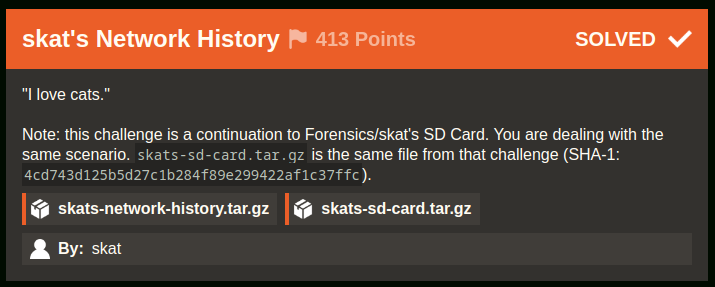
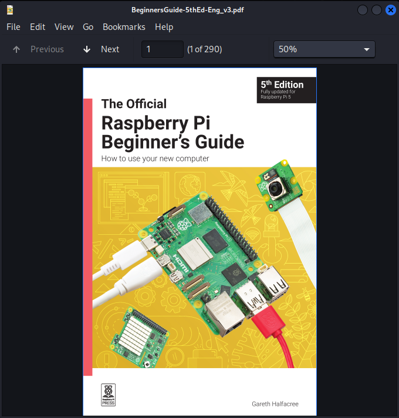
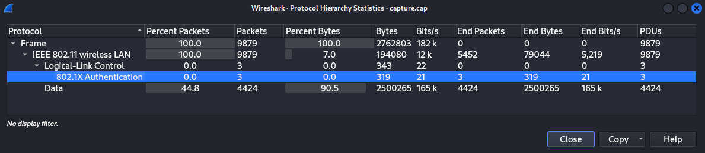
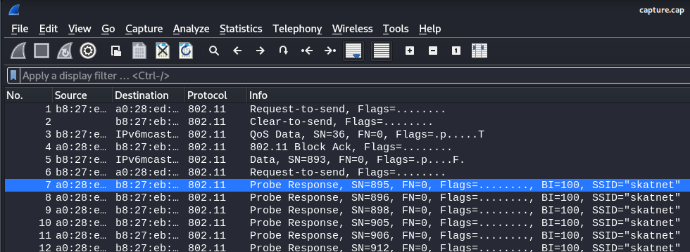
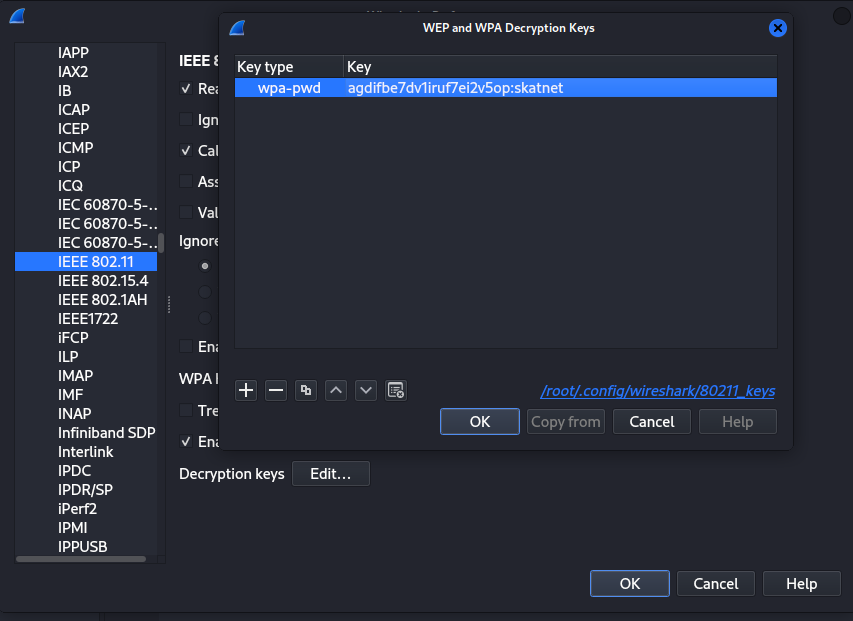
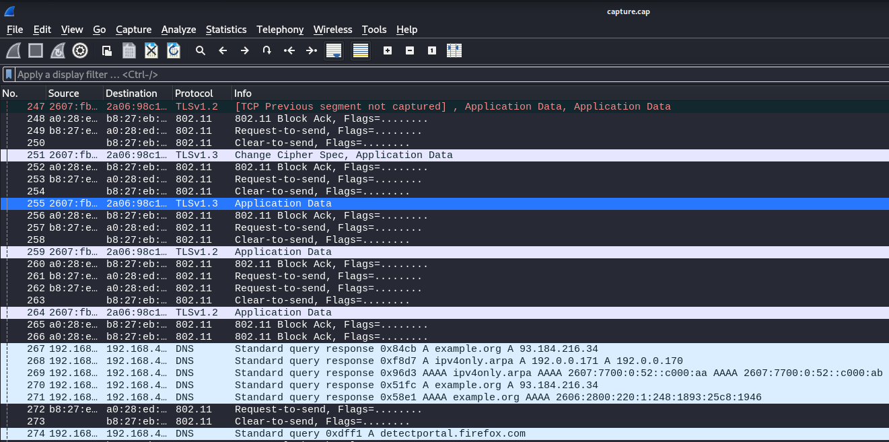
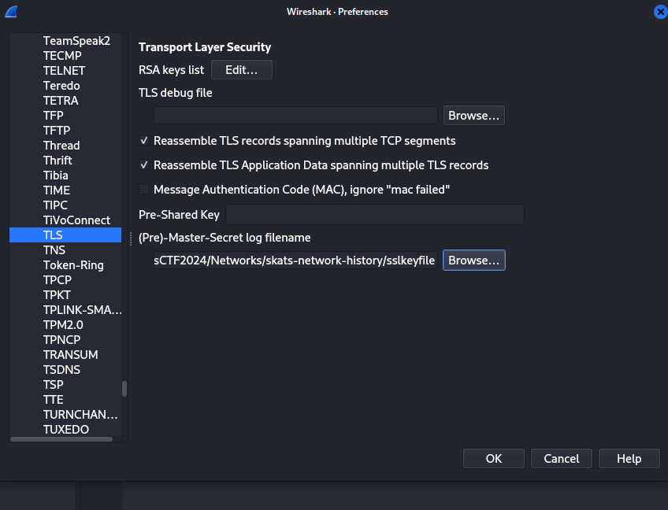
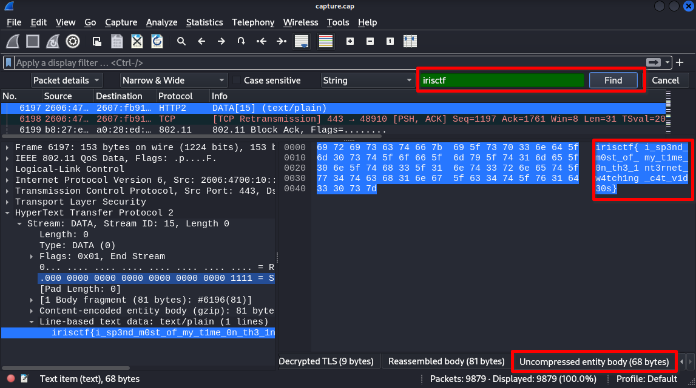
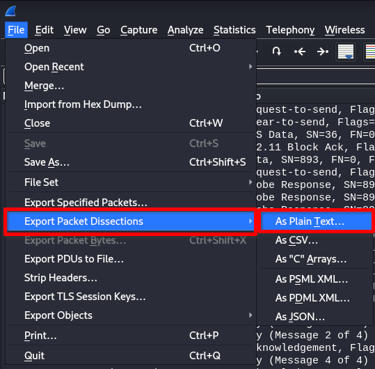
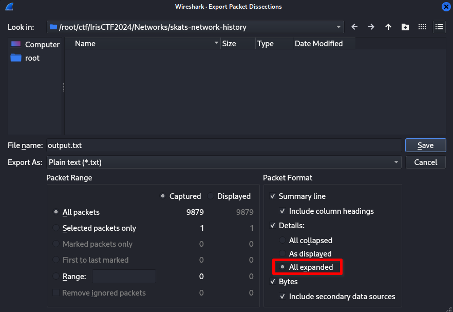

skat's Network History [44 Solves]
Description

"I love cats."
Note: this challenge is a continuation to Forensics/skat's SD Card. You are dealing with the same scenario.
skats-sd-card.tar.gzis the same file from that challenge (SHA-1:4cd743d125b5d27c1b284f89e299422af1c37ffc).
skats-network-history.tar.gzskats-sd-card.tar.gzBy: skat
Short Solution
- Leak WPA passphrase in the provided disk image and decrypt 802.11 packet
- Decrypt TLS packet by the provided sslkeyfile
Solution
Basic file checks
$ tar ztf skats-network-history.tar.gz
skats-network-history/
skats-network-history/capture.cap
skats-network-history/sslkeyfile
$ file skats-network-history/*
skats-network-history/capture.cap: pcap capture file, microsecond ts (little-endian) - version 2.4 (802.11, capture length 65535)
skats-network-history/sslkeyfile: ASCII text
$ tar ztf skats-sd-card.tar.gz
skats-sd-card/
skats-sd-card/mmcblk0p2.img.zip
$ unzip skats-sd-card/mmcblk0p2.img.zip
Archive: skats-sd-card/mmcblk0p2.img.zip
inflating: mmcblk0p2.img
$ file mmcblk0p2.img
mmcblk0p2.img: Linux rev 1.0 ext4 filesystem data, UUID=4aa56689-dcb4-4759-90e6-179beae559ac, volume name "rootfs" (extents) (large files)
$ mkdir mnt; mount mmcblk0p2.img mnt
$ tree -L 1 mnt
mnt
├── bin -> usr/bin
├── boot
├── dev
├── etc
├── home
├── initrd.img -> boot/initrd.img-6.1.0-rpi7-rpi-v8
├── initrd.img.old -> boot/initrd.img-6.1.0-rpi7-rpi-2712
├── lib -> usr/lib
├── lost+found
├── media
├── mnt
├── opt
├── proc
├── root
├── run
├── sbin -> usr/sbin
├── srv
├── sys
├── tmp
├── usr
├── var
├── vmlinuz -> boot/vmlinuz-6.1.0-rpi7-rpi-v8
└── vmlinuz.old -> boot/vmlinuz-6.1.0-rpi7-rpi-2712
20 directories, 4 files
$ cd mnt
$ cat etc/hostname
raspberrypi
$ tree -L 1 home/skat/
home/skat/
├── Bookshelf
├── Desktop
├── Documents
├── Downloads
├── Music
├── Pictures
├── Public
├── Templates
└── Videos
10 directories, 0 files
$ ls home/skat/Bookshelf
BeginnersGuide-5thEd-Eng_v3.pdf
BeginnersGuide-5thEd-Eng_v3.pdf is:

Initial Analysis
In this challenge, the three main files are provided: capture.cap, sslkeyfile and mmcblk0p2.img. The sslkeyfile is SSLKEYLOGFILE (see below) so it seems that it's expected to decrypt capture.cap by it. The mmcblk0p2.img seems Rasbperry Pi SD Card disk image.
sslkeyfile
$ head sslkeyfile
# SSL/TLS secrets log file, generated by NSS
CLIENT_HANDSHAKE_TRAFFIC_SECRET dd44eae934ca8680a374856e99c27ab431662327e59701d777708a0a131e3f33 b4f5bd4e7f93c0b042bb11d020e170c1ee4409fbb8ce63c0bc2f80c6fe23e735
SERVER_HANDSHAKE_TRAFFIC_SECRET dd44eae934ca8680a374856e99c27ab431662327e59701d777708a0a131e3f33 2d637ef7470bcd41bb916f39d9acf4015c17f429dd44bf612ccbcca210a94c48
CLIENT_HANDSHAKE_TRAFFIC_SECRET efe524b421a1dde30f71fd9d482575ba0aba618f36b765f8ed77f1a97168a0ee 89583bff0979029a9be40ebb10a718ef97f9d384e45941689de82959c4ceeeea
SERVER_HANDSHAKE_TRAFFIC_SECRET efe524b421a1dde30f71fd9d482575ba0aba618f36b765f8ed77f1a97168a0ee 599ea92ecd9ee99cc8676e901cbf03b1d8fa39e135453585074f4d264d4baa2d
CLIENT_TRAFFIC_SECRET_0 efe524b421a1dde30f71fd9d482575ba0aba618f36b765f8ed77f1a97168a0ee ca5821a2c7c4a8c3ad497ecd60148e493fcc2da5d5ef3c689289c8d1fd45cf4d
SERVER_TRAFFIC_SECRET_0 efe524b421a1dde30f71fd9d482575ba0aba618f36b765f8ed77f1a97168a0ee 7687d0320a8477beda7943dc5af091aa316f0e6079efc2fc5b923949a8c13921
EXPORTER_SECRET efe524b421a1dde30f71fd9d482575ba0aba618f36b765f8ed77f1a97168a0ee f2113d637d7a99f0cfad47700a2796b409d52dbdf40f8f9e4910139ec39bab25
CLIENT_TRAFFIC_SECRET_0 dd44eae934ca8680a374856e99c27ab431662327e59701d777708a0a131e3f33 9733bb2bd0df15e45e7a8f55abf123386e8e003363930d259688b4d05aa3a566
SERVER_TRAFFIC_SECRET_0 dd44eae934ca8680a374856e99c27ab431662327e59701d777708a0a131e3f33 8703339a14e94fc3673ffb66cef07df35048cedb204a1229ec86e33b03680afb
Decrypt 802.11
Looking at the capture.cap with Wireshark and open Protocol Hierarchy.

There are only 802.11 protocol packets, and there are no TLS or HTTP packets.
The 802.11 packets are encrypted so we cannot see the data.
Google with wireshark 802.11 decrypt, I found HowToDecrypt802.11 document.
Based on this, we can decrypt the data if we have wpa-pwd (the password and SSID).

I found the SSID skatnet in capture.cap.
I will try to search the wpa password in mmcblk0p2.img.
$ grep skatnet -R . 2>/dev/null
./home/skat/.cache/lxsession/LXDE-pi/run.log:** Message: 21:22:19.803: No keyring secrets found for skatnet/802-11-wireless-security; asking user.
./etc/NetworkManager/system-connections/skatnet.nmconnection:id=skatnet
./etc/NetworkManager/system-connections/skatnet.nmconnection:ssid=skatnet
$ cat ./etc/NetworkManager/system-connections/skatnet.nmconnection
[connection]
id=skatnet
uuid=470a7376-d569-444c-a135-39f5e57ea095
type=wifi
interface-name=wlan0
[wifi]
mode=infrastructure
ssid=skatnet
[wifi-security]
auth-alg=open
key-mgmt=wpa-psk
psk=agdifbe7dv1iruf7ei2v5op
[ipv4]
method=auto
[ipv6]
addr-gen-mode=default
method=auto
[proxy]
Got psk=agdifbe7dv1iruf7ei2v5op.
Referred to NetworkManager document, it is the passphrase for WPA-PSK.
802-11-wireless-security: NetworkManager Reference Manual
Pre-Shared-Key for WPA networks. For WPA-PSK, it's either an ASCII passphrase of 8 to 63 characters that is (as specified in the 802.11i standard) hashed to derive the actual key, or the key in form of 64 hexadecimal character. The WPA3-Personal networks use a passphrase of any length for SAE authentication.
I will try to decrypt by agdifbe7dv1iruf7ei2v5op:skatnet.
Wireshark > Edit > Preferences > Protocols in left pane > IEEE 802.11 > Decryption Keys Edit button > add wpa-pwd


The decryption was successful so I can see the packets that were previously invisible due to encryption.
TLS Decryption
I used the provided sslkeyfile file to decrypt TLS packet.
Wireshark > Edit > Preferences > Protocols in left pane > TLS > (Pre)-Master-Secret log filenames > add sslkeyfile

TLS Decryption was completed so I will try to find the flag.
Ctrl + F, input irisctf, Enter:

The flag is in No.6197.
Or we can export the decrypted packets to a file and search for the flag by grep.
Wireshark > File > Export Packet Dissections > As Plain Text...

Select All expanded and Save

$ grep -n irisctf output.txt
803341: irisctf{i_sp3nd_m0st_of_my_t1me_0n_th3_1nt3rnet_w4tch1ng_c4t_v1d30s}
803372:0000 69 72 69 73 63 74 66 7b 69 5f 73 70 33 6e 64 5f irisctf{i_sp3nd_
Flag
irisctf{i_sp3nd_m0st_of_my_t1me_0n_th3_1nt3rnet_w4tch1ng_c4t_v1d30s}